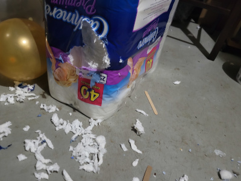
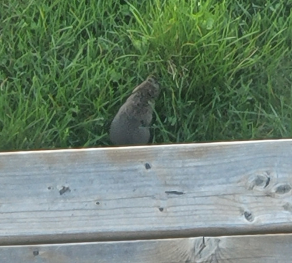

The Rat Saga, Pt.2
2022-05-11
Time Frame: November 2021 - May 2021
Welcome to the long-awaited part 2 to the Rat Saga. I have now confirmed that the rats did in fact chew on the ethernet cable, but that is nothing compared to the damage they did to the house.
My days of living in the basement were over in November, and as soon as I moved back upstairs, they conquered the basement. It was full of bite marks and they left a mess everywhere in one of the rooms.

Shortly after that, disaster struck; one of them chewed on a pipe, leading to damage on the ceiling and floor. As my very handy father fixed the pipe, we didn't have running water in the house for a couple days.
Rats: 3
Patel Household: 0
Prior to this, my parents didn't really do anything about it because it was all hearsay and they weren't really bothering me, but after those incidents, they put on a full investigation.
It turns out that there was a hole in the house under the deck, which was immediately filled once we figured that out. For good measure, my mom put some rat poison around where the hole was and she found a dead rat not long after.
My parents were on guard for a few weeks after, and it seems like the rats were no longer in the house.
Rats: 3
Patel Household: 5
That did not stop them from coming back after winter though. I spotted a rodent one morning last week, and clearly they are living under our deck.

The rats are not letting up, but if we are more cautious than last year, I'm sure my mom can kill even more rats since she seems to be an expert on that.
My mom also did some research on why the rats infiltrated our house to begin with, and it turns out that the bird seed in our backyard attracted them. So if you don't want rats in your house, I suggest you put bird seed far away from your house and/or not have any at all.
Today I spotted a dead rat in our backyard. Click on the gif to see the dead rat ↓